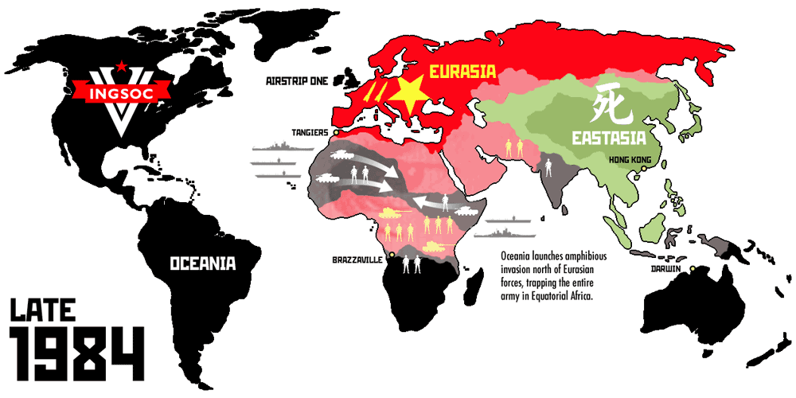
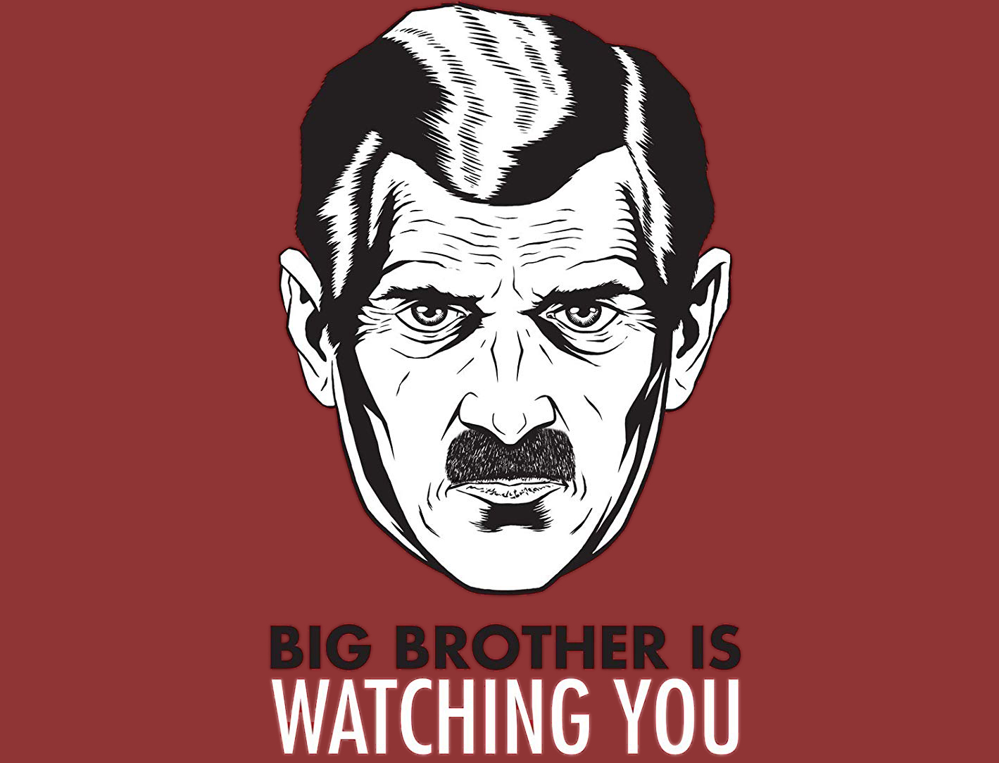
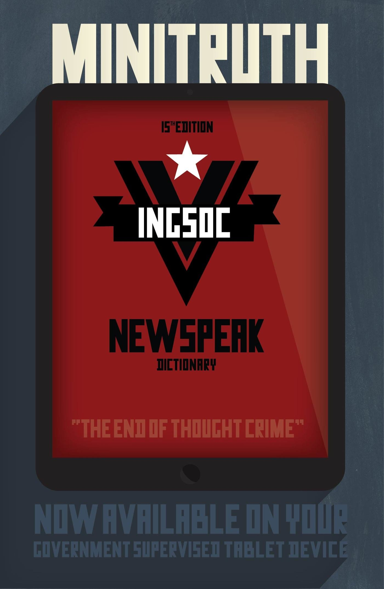
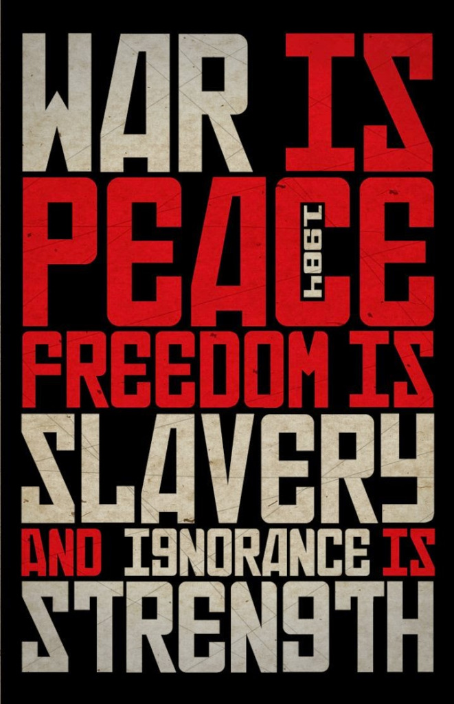

Background
'1984,' written by George Orwell, takes place in an imagined future when much of the world has fallen victim to perpetual war, omnipresent government surveillance, historical negationism, and propaganda. Great Britain, known as Airstrip One, has become a province of a superstate named Oceania that is ruled by the Party. They employ the Thought Police to persecute individuality and independent thinking. Big Brother, the leader of the Party, enjoys an intense cult of personality despite the fact that he may not exist. The protagonist, Winston Smith, is a diligent and skillful rank-and-file worker and Party member who secretly hates the Party and dreams of rebellion.
Main Characters
These are images of the characters from the 1984 movie
Winston Smith
The protagonist of 1984, representative of your typical everyman. He's a reluctant rebel and enemy of Big Brother and the party. One of his driving motivations is his curiousity of the past before the Party.
Julia
Winston's partner in crime, Julia is another enemy of the Party, but uses a different method of rebellion. She's less concerned with the how and why of the Party and more concerned with the "doing things that aren't allowed without getting caught."
O'Brien
A man that works in the same ministry as Winston that Winston feels a connection with. From the beginning of the book, Winston is convinced that O'Brien is the same as him: secretly an enemy of the Party.
The Party
In the mid 1950s, Britain fell into civil war before the English Socialist Party, abbreviated as Ingsoc, emerged victorious and formed a totalitarian government in Britain. Ingsoc became the sole government party in this new nation, and it's been abbreviated to its members as 'The Party.' The Party manipulates historical records continually throughout the book so as to always be in the right, claims credit for previous inventions, and moniters all of the Party members through a telescreen in each of their apartments. Posters of the Party leader, Big Brother, dominate the city. They are pasted to the sides of buildings in city squares, and to the walls in nearly every single building that a Party member will enter. Each poster is captioned "BIG BROTHER IS WATCHING YOU," and Winston describes these posters as the type whose eyes follow you as you walk by them. (Note the similarities between Big Brother's face and Adolf Hitler's.)
Newspeak
To meet the ideological requirements of Ingsoc, the Party created a controlled language of heavily-restricted grammar and vocabulary, called Newspeak. (To the right is a concept of what an advertisement for a Newspeak dictionary might look like.) It is meant to limit the freedom of thought: personal identity, self-expression, and free will. These threaten the ideology of the régime of Big Brother and the Party, who have criminalised such concepts into thoughtcrime as contradictions of Ingsoc orthodoxy. Below is an example of Newspeak from Winston's work:
"times 3.12.83 reporting bb dayorder doubleplusungood refs unpersons rewrite fullwise upsub antefiling," (Part I, Chapter IV).
Translated into regular English (which is known as Oldspeak to the members of the Party), this means something along the lines of:
"The reporting of Big Brother’s Order for the Day in ‘The Times’ of December 3rd 1983 is extremely unsatisfactory and makes references to non-existent persons. Rewrite it in full and submit your draft to higher authority before filing," (Part I, Chapter IV).
By using the same words with added prefixes or suffixes, Newspeak creates exact opposites and eliminates synonyms, removing different shades of meaning from the English language.
Doublethink
Doublethink is the act of simultaneously accepting two mutually contradictory beliefs as correct, often in distinct social contexts. It is notable due to a lack of cognitive dissonance — thus the person is completely unaware of any conflict or contradiction. While it could be partly a product of Big Brother's formal brainwashing programs, the novel explicitly shows people learning to doublethink due to peer pressure and a desire to gain status within the Party. It is explained in the novel as so:
"Applied to an opponent, it means the habit of impudently claiming that black is white, in contradiction of the plain facts. Applied to a Party member, it means a loyal willingness to say that black is white when Party discipline demands this. But it means also the ability to believe that black is white, and more, to know that black is white, and to forget that one has ever believed the contrary. This demands a continuous alteration of the past, made possible by the system of thought which really embraces all the rest, and which is known in Newspeak as doublethink," (Part II, Chapter IX).
To the right are the three Party slogans. They are the most ubiquitous examples of doublethink in the book.